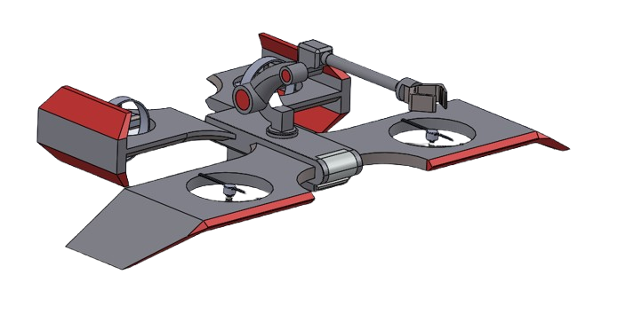
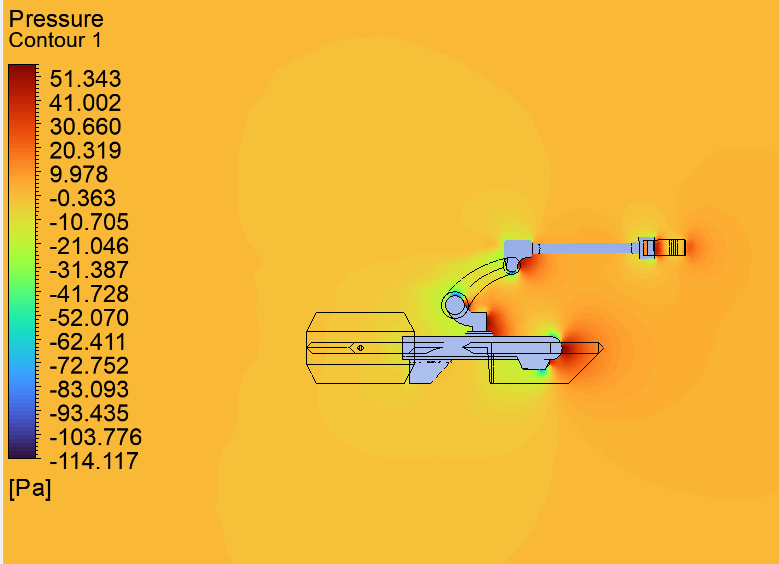
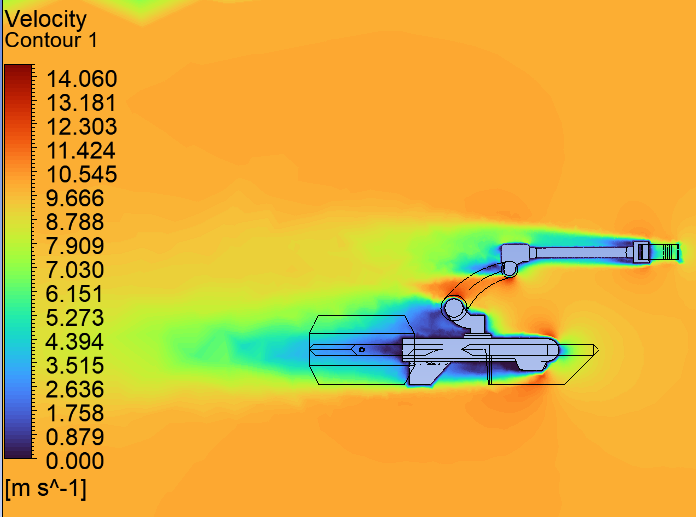
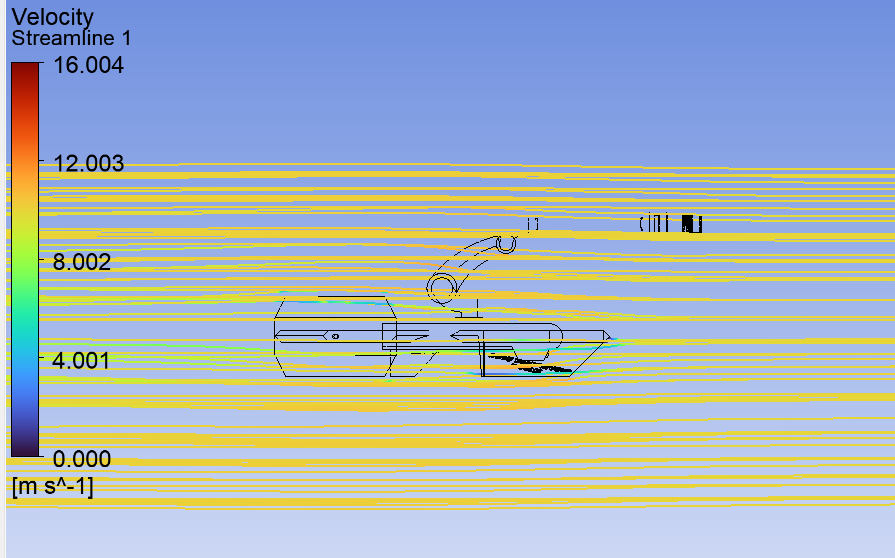
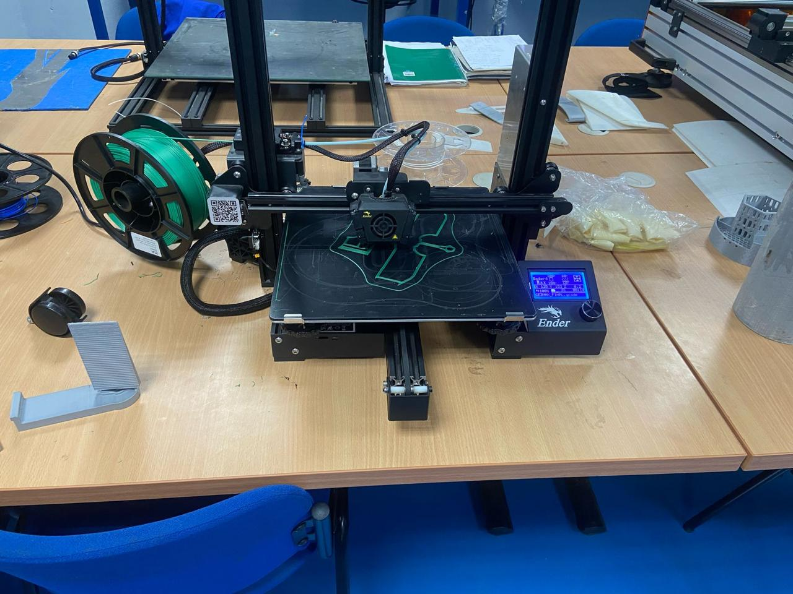
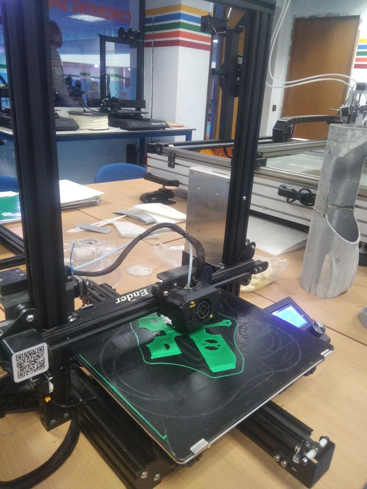
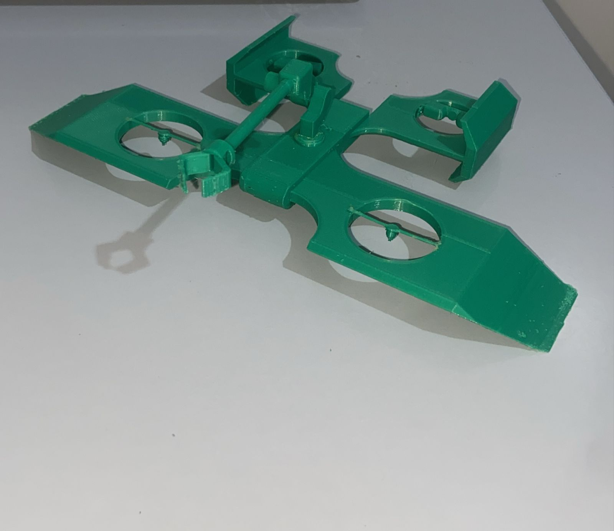

01 Introduction & Problématique
Les AAUV (Aerial-Aquatic Unmanned Vehicle), capables de naviguer à la fois dans l'air et sous l'eau, représentent une avancée technologique majeure. Ces dispositifs combinent les principes de l'aérodynamique et de l'hydrodynamique pour offrir une flexibilité d'utilisation unique.
Ils trouvent des applications dans divers domaines, allant de la surveillance militaire à l'exploration scientifique sous-marine. Le drone présenté ici est conçu pour une transition fluide entre les milieux aérien et aquatique, optimisant ainsi ses performances dans les deux environnements.
02 Domaines d'utilisation
Les AAUVs ont plusieurs applications stratégiques et scientifiques :
Surveillance et défense
Reconnaissance maritime, surveillance des zones côtières et interventions militaires.
Exploration scientifique
Cartographie des fonds marins, suivi des espèces marines, collecte de données océanographiques.
Secours et sauvetage
Assistance en haute mer, recherche de naufragés, transmission de signaux de détresse.
Industrie offshore
Inspection des plateformes pétrolières et éoliennes en mer.
03 Degrés de liberté du drone
Un AAUV possède 6 degrés de liberté dans l'air et sous l'eau :
Dans l'air
Translations : Avant/arrière (X), gauche/droite (Y), haut/bas (Z)
Rotations : Roulis (Roll — autour de X), Tangage (Pitch — autour de Y), Lacet (Yaw — autour de Z)
Sous l'eau
Similaire aux mouvements aériens mais influencés par la poussée d'Archimède et la résistance hydrodynamique.
Propulsion adaptée via hélices sous-marines ou jets directionnels.
04 Conception du drone
Matériaux :
Le choix du matériau est une étape cruciale dans la conception d'un châssis de drone imprimé en 3D. Après une analyse approfondie des options disponibles, nous avons sélectionné le PLA (Acide Polylactique) pour ses propriétés uniques qui répondent parfaitement aux exigences de notre projet, notamment ses avantages techniques, environnementaux et économiques.
Systèmes embarqués :
- Propulseurs adaptés pour l'air et l'eau.
- Capteurs de pression, accéléromètres et gyroscopes.
- Caméras et sonars pour la navigation sous-marine.
- Système de communication mixte (radio en surface, acoustique sous l'eau).

05 Simulation dans l'air (CFD — ANSYS)
PRESSION :

Cette simulation montre les points où les contraintes augmentent, où les zones rouges représentent une pression allant jusqu'à 51.343 Pa. La vitesse utilisée ici est 10 m/s.
51.343
Pression max (Pa)
-114.117
Pression min (Pa)
10 m/s
Vitesse d'entrée
VITESSE :

La simulation CFD réalisée sous ANSYS présente une analyse des contours de vitesse autour du drone. L'échelle de vitesse varie de 0 m/s (bleu) à 14 m/s (rouge), montrant un écoulement globalement fluide en amont. À l'arrière du drone, une zone de basse vitesse et de recirculation est visible, indiquant une traînée aérodynamique.
STREAMLINES :

La simulation CFD met en évidence l'écoulement de l'air autour du drone, avec des lignes de courant majoritairement parallèles en amont et des perturbations locales au niveau de certaines surfaces. L'échelle de vitesse montre une accélération du flux atteignant jusqu'à 16 m/s, tandis que des zones de recirculation et de vortex apparaissent à l'arrière, suggérant une traînée aérodynamique.
06 Impression 3D
Pour préparer le G-code, nous avons utilisé l'application Cura. La machine Ender a été utilisée pour réaliser l'impression du châssis en PLA.

Machine Ender — Démarrage

Impression en cours

Châssis imprimé — Résultat final
Figure : Processus d'impression 3D du châssis NeptuneX sur machine Ender
Conclusion
Ce drone hybride offre une capacité unique d'exploration et d'intervention dans des environnements variés. Sa conception innovante intègre des solutions avancées pour assurer une transition fluide entre les milieux aérien et aquatique. Grâce aux simulations aérodynamiques et hydrodynamiques réalisées sous ANSYS, ses performances sont optimisées pour répondre à divers besoins stratégiques et scientifiques.